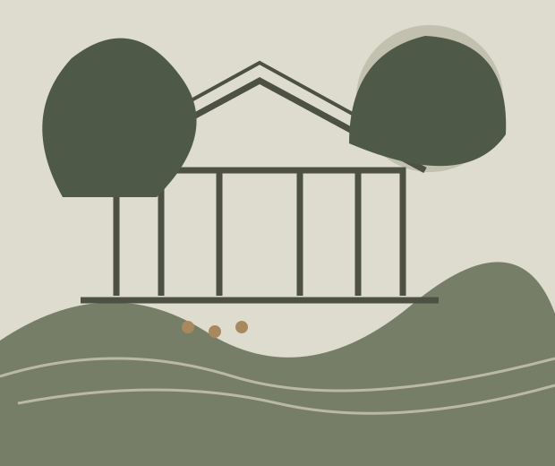

La emperatriz decreta: Aran ha demostrado valor y virtud en el servicio prestado a la casa imperial. En reconocimiento de su lealtad y de su unión con la soberana, se le concede el título de Emperador Consorte, con los honores y precedencia correspondientes a su dignidad.

Una historia de herencia y gobiernoEl peso de
王朝
El peso de
la legitimidad
La historia de una dinastía se construye con herencias y decisiones, pero también con las alianzas, las pérdidas y los acuerdos que determinan quién puede gobernar y bajo qué autoridad se conserva el equilibrio del imperio
ARCHIVO IMPERIALLA CASA IMPERIAL · CRÓNICA VIVAEST. AÑO I
01 LA CRÓNICA
La casa reinante
La sucesión
imperial
王位 · LEGITIMIDAD
La emperatriz decreta: la sucesión al trono no será determinada únicamente por el orden de nacimiento. Quienes pertenezcan al linaje imperial podrán ser considerados conforme a sus méritos, preparación, conducta y servicio al Imperio; la capacidad demostrada para asumir el gobierno será fundamento de la designación. Esta disposición tendrá efecto desde el presente día.
La emperatriz decreta: en reconocimiento a la lealtad con que el Emperador Consorte ha acompañado a la familia imperial, se dispone que el harén de la soberana permanezca sin otras consortes. Aran será el único esposo reconocido en la unión de Otoha; esta disposición concierne a la casa imperial y a la unión de la emperatriz.
Entre tres estrellas, una ascendió; el pueblo la alabó, el gobierno la respetó y el antiguo sol conoció el peso de su luz
DE LOS ANALES DE LA CORTE02 LA FAMILIA IMPERIAL
Rango, privilegio y responsabilidad
La sangre
de la corona
La cercanía con la soberana concede precedencia, reconocimiento y ciertos privilegios dentro de la corte; sin embargo, pertenecer a la familia imperial no significa que cada integrante pueda intervenir por cuenta propia en la administración, pues el rango familiar y la autoridad de gobierno responden a responsabilidades distintas
La emperatriz
Otoha Miya · Emperatriz reinante
Quien ocupa el trono ejerce la máxima autoridad del imperio y responde por el equilibrio entre sus instituciones; preside las audiencias y las deliberaciones del consejo, recibe a funcionarios y representantes de las casas, escucha memoriales, examina recomendaciones y dispone los nombramientos y decretos que dan curso al gobierno. Su presencia en la corte no se limita a los actos ceremoniales, pues le corresponde atender los asuntos de Estado y decidir qué cuestiones requieren su intervención directa, mientras la representación familiar y doméstica puede compartirse con su consorte sin que ello suponga dividir la soberanía.
Emperador Consorte
Aran · Emperador Consorte
Quien ocupa este título acompaña a la soberana en ceremonias de Estado, recepciones, visitas y compromisos en los que corresponde que la casa reinante se presente unida; dentro del palacio participa en la organización de la residencia, supervisa los asuntos domésticos que le han sido confiados, recibe a los invitados de su ámbito y puede atender actividades de patronazgo, beneficencia y representación social. Su responsabilidad consiste en sostener la vida ceremonial y doméstica de la casa imperial, no en gobernar junto a la emperatriz ni sustituirla ante el consejo, por lo que el título no le concede autoridad propia sobre los ministerios o el ejército. No está confinado a los recintos privados y conserva libertad para desplazarse dentro y fuera del castillo, visitar establecimientos, atender asuntos personales y recorrer la capital, siempre que sus compromisos oficiales y las disposiciones de seguridad lo permitan.
Príncipes y princesas imperiales
Osamu Miya · Príncipe imperial
Atsumu Miya · Príncipe imperial
Los integrantes de las ramas colaterales conservan su rango dentro de la familia reinante y participan en la vida ceremonial de la corte conforme a su precedencia; pueden mantener residencias y patrimonio propios, asistir a actos oficiales, presentar peticiones y ofrecer consejo cuando la soberana solicita su parecer. Su parentesco les concede reconocimiento y cercanía con la casa imperial, pero no los convierte en titulares de ministerios ni les atribuye competencias administrativas o militares por el solo hecho de ser príncipes; cualquier responsabilidad pública requiere un nombramiento específico de la corona.
03 GOBIERNO IMPERIAL
Oficios, influencia y servicio
La arquitectura
del poder
El gobierno imperial reúne una administración civil, una cadena de mando militar y diversas instituciones religiosas y especializadas, cuyos deberes se relacionan sin confundirse entre sí; todas responden, dentro de sus respectivas competencias, a la autoridad de la soberana y a las disposiciones que regulan el funcionamiento del Estado
04.1 SOCIEDAD · CASAS Y PROCEDENCIAS
Linaje y posición social
El lugar de
cada casa
La procedencia de una familia puede influir en sus vínculos, recursos y expectativas dentro de la sociedad, pero no determina de antemano el destino de sus integrantes ni garantiza el ascenso; el reconocimiento debe construirse mediante las decisiones, los servicios y las contribuciones que cada persona consiga demostrar
注
El organigrama muestra únicamente los vínculos registrados; las ramas y filiaciones pendientes no se completan por suposición. Selecciona un integrante para consultar su ficha. Los inventarios pertenecen a cada casa y representan bienes que pueden intervenir en escenas y acuerdos narrativos; su uso debe registrarse en los archivos correspondientes.
04.2 SOCIEDAD · SISTEMA DE MÉRITOS
Trayectoria y reconocimiento
El mérito
se demuestra
Los puntos reconocen contribuciones concretas y cada diez puntos se convierten en un mérito individual; los méritos son acumulativos, no se gastan al solicitar beneficios y pueden guardarse para alcanzar una recompensa posterior. Cada personaje decide si reclama un beneficio o conserva sus méritos.
10PUNTOS DE MÉRITO
Un mérito reconocido
Cada diez puntos individuales verificados equivalen a un mérito individual. Los méritos no se descuentan ni se canjean: se conservan de forma acumulativa y sirven como requisito para solicitar los beneficios de la escala. La administración revisa cada solicitud según su coherencia narrativa, la disponibilidad de recursos y la autoridad necesaria para concederla.
04.3 · BENEFICIOS POR MÉRITO
Beneficios disponibles a solicitud
El mérito abre posibilidades
Al alcanzar cada umbral, el personaje puede solicitar uno de los beneficios compatibles con su trayectoria; no está obligado a reclamarlo y puede conservar todos sus méritos para optar más adelante por una recompensa superior. La solicitud no garantiza su concesión: la administración revisará la coherencia narrativa, la disponibilidad de recursos y, cuando corresponda, la autoridad necesaria para otorgarla.
Estipendios y contribuciones al Imperio
- Estipendio: ingreso periódico que la Corona asigna a una casa según su posición económica, los servicios prestados y las contribuciones verificadas; no se confunde con el salario de un cargo ni con fondos públicos que un funcionario administra.
- Nivel de ingreso: bajo, medio o alto. El nivel puede revisarse con el tiempo; un título nobiliario no garantiza riqueza elevada y una casa sin título hereditario puede mejorar su posición mediante servicio y aportes.
- Contribuciones: las casas pueden aportar taeles, alimentos, materiales, suministros, transporte, trabajo especializado o apoyo logístico a proyectos y necesidades imperiales.
- Registro: toda entrega debe constar en un archivo narrativo con cantidad, procedencia, destinatario y propósito. La administración verifica su alcance antes de reconocer puntos de casa o ajustar el estipendio.
- Separación de fondos: el patrimonio familiar, los estipendios y los recursos públicos del Estado se registran por separado; un funcionario no puede convertir fondos ministeriales en bienes de su casa.
※
Los méritos individuales no se transfieren entre parientes ni se mezclan con los de la casa. Las contribuciones colectivas se registran en una cuenta familiar independiente. Los cargos oficiales previamente asignados, como un ministerio o un mando militar, se reconocen por nombramiento y no se obtienen automáticamente mediante esta escala.
04.3 SOCIEDAD · ESTABLECIMIENTOS Y ENTRETENIMIENTO
Encuentro, recreación y conversación
Casas de té
y jardines privados
Fuera del recinto palaciego, la capital cuenta con casas de té, jardines privados y salones de entretenimiento donde nobles, funcionarios, comerciantes y viajeros se reúnen para conversar, escuchar música, contemplar espectáculos y compartir la hospitalidad de sus anfitriones. Cada establecimiento cultiva una reputación particular: algunos destacan por sus intérpretes de canto y danza; otros, por sus jardines, sus juegos, sus espacios reservados o la discreción con la que reciben a sus visitantes.
Estos lugares forman parte de la vida social de la ciudad, no de la administración imperial. Una visita puede servir para descansar, cultivar amistades, conocer a personas de otras casas o sostener conversaciones privadas; salvo que exista un nombramiento o una convocatoria oficial, lo que allí ocurre no constituye una audiencia de Estado ni compromete automáticamente a la casa de quien asiste.

茶樓 · JARDINES · SALONES04.3.2 · ACTIVIDADES Y SERVICIOS
Canto, danza y música
Los establecimientos pueden contratar intérpretes de canto, danza, recitación o ejecución instrumental para amenizar reuniones y veladas; su prestigio depende de la destreza artística, la formación y la reputación que construyan.
Recepción y conversación
Las anfitrionas reciben a los visitantes, presentan a los invitados cuando corresponde, conducen reuniones y procuran que la velada transcurra conforme a las costumbres del lugar. Su trato frecuente con distintos círculos puede convertirlas en observadoras de la vida social, pero no les concede autoridad oficial.
Juegos de salón y patio
Los visitantes pueden participar en juegos de mesa, cartas, destreza y competencias al aire libre. Las partidas se acuerdan entre sus participantes y siguen las reglas y condiciones económicas indicadas en los apartados siguientes.
04.3.3 · JUEGOS Y APUESTAS
Juegos de salón · puntos por victoria
Los juegos de salón se desarrollan en mesas y espacios de reunión de las casas de té. Cada victoria concede los puntos indicados para la modalidad; se registran en la trayectoria individual del personaje. Antes de comenzar, los participantes deben acordar las reglas, el formato y quién verificará el resultado. Estos puntos se suman al registro individual y no sustituyen los puntos por participación en eventos.
Juegos de patio · apuestas en taeles
Los patios y recintos recreativos ofrecen juegos de puntería, precisión y competencia física. La apuesta inicial recomendada aparece indicada en cada modalidad; puede aumentar en cada partida a gusto de los participantes, siempre que acuerden el importe antes de comenzar y dispongan de fondos suficientes. El ganador recibe lo apostado según las reglas pactadas. Estas partidas no conceden puntos de mérito.
Regla de convivenciaLa hospitalidad, la discreción y el respeto por los acuerdos sostienen la reputación de estos establecimientos. Ninguna visita, invitación o partida debe interpretarse como compromiso oficial si los personajes no lo han establecido expresamente.
05 CASAS · VIDA FAMILIAR
Parentesco, matrimonio y representación
La vida
familiar
La casa es el primer espacio de pertenencia, formación y protección de cada personaje; en ella se transmiten el nombre, los bienes y las obligaciones del linaje, pero también se negocian las libertades individuales, los matrimonios y las responsabilidades que cada integrante asume conforme a su edad, experiencia y posición
家禮05.1 · LIBERTADES Y OBLIGACIONES
Libertades y obligaciones
El decoro regula la conducta, no elimina la autonomía
Hombres y mujeres pueden estudiar, administrar bienes propios, cultivar las artes, mantener correspondencia y asistir a ceremonias, así como participar en actividades sociales, intelectuales o públicas que correspondan a su rango y a las circunstancias de cada ocasión; el decoro establece la forma adecuada de conducirse, pero no supone que deban renunciar a su autonomía ni permanecer apartados de la vida exterior. El matrimonio, por su parte, crea compromisos de lealtad, convivencia y representación, y quien asume el lugar de consorte se ocupa de las responsabilidades domésticas y sociales vinculadas a esa función, tanto en un matrimonio entre hombre y mujer como en uno entre personas del mismo sexo; la cabeza de casa conserva la representación formal del linaje, aunque puede delegar tareas y compartir decisiones con su pareja cuando así lo acuerden.
06 ECONOMÍA · SUBASTAS
Objetos de procedencia singular
La memoria
tiene precio
Las casas pueden utilizar el dinero de su cuenta familiar para adquirir objetos en las subastas o participar en actividades económicas; también pueden ofrecer en subasta objetos de su propio patrimonio para obtener dinero y aumentar su capital privado; cada pieza deberá pertenecer legítimamente a quien la presenta y contar con una descripción de su procedencia y estado, mientras que las ofertas, adjudicaciones y pagos se registrarán conforme a las reglas económicas del grupo. Ninguna familia podrá disponer de bienes imperiales, públicos o ajenos como si fueran propios
Los lotes publicados son ejemplos iniciales; cada casa podrá proponer nuevos objetos para vender y recibir el importe obtenido en su capital privado. Antes de abrir una puja deberán anunciarse el propietario, la procedencia, el estado de conservación y el precio de salida, de modo que los participantes sepan qué adquieren y la administración pueda registrar correctamente el movimiento de bienes y dinero
07 AGENDA DE LA CORTE
Días reales · semanas de tres días
El curso
de los días
El calendario del rol utiliza una equivalencia fija: tres días de la vida real corresponden a una semana dentro del grupo. Por tanto, cada bloque de tres días reales abre una nueva semana narrativa; la agenda se publica por jornadas y las convocatorias pueden extenderse según la participación. Los sucesos extraordinarios —inundaciones, tensiones militares, ceremonias, intrigas o epidemias— no se resuelven automáticamente al cambiar la semana: sus consecuencias continúan hasta que las escenas y decisiones de los personajes las desarrollen.
宴
La familia anfitriona de cada banquete o fiesta de té se escogerá mediante una ruleta entre las casas participantes, y su designación se anunciará junto con la convocatoria para que pueda preparar el espacio, recibir a los invitados y asumir las responsabilidades sociales que acompañan la celebración
08 REGISTRO DE TRAYECTORIAS
Mérito acumulado por casa
El libro
de las familias
El archivo público reúne el estado de cada casa, el capital privado registrado y las contribuciones de sus integrantes, permitiendo consultar cómo se distribuyen los puntos y méritos dentro de cada familia; los registros se actualizarán a medida que la administración verifique nuevas participaciones, de modo que las cifras publicadas correspondan a movimientos documentados y no a estimaciones
Cada casa dispone de una cuenta familiar compartida para compras, subastas y contribuciones. Este registro muestra el capital y los resultados colectivos; las reglas para aportar recursos al Imperio se explican en el apartado de méritos. El patrimonio y los inventarios se consultan dentro de la ficha de cada casa. Los fondos públicos administrados por funcionarios nunca forman parte de las cuentas familiares.
El nombre de una casa puede heredarse, pero su historia se construye con las decisiones, los compromisos y las acciones de quienes aceptan la responsabilidad de sostenerlo
ARCHIVO IMPERIAL · FIN DEL REGISTRO